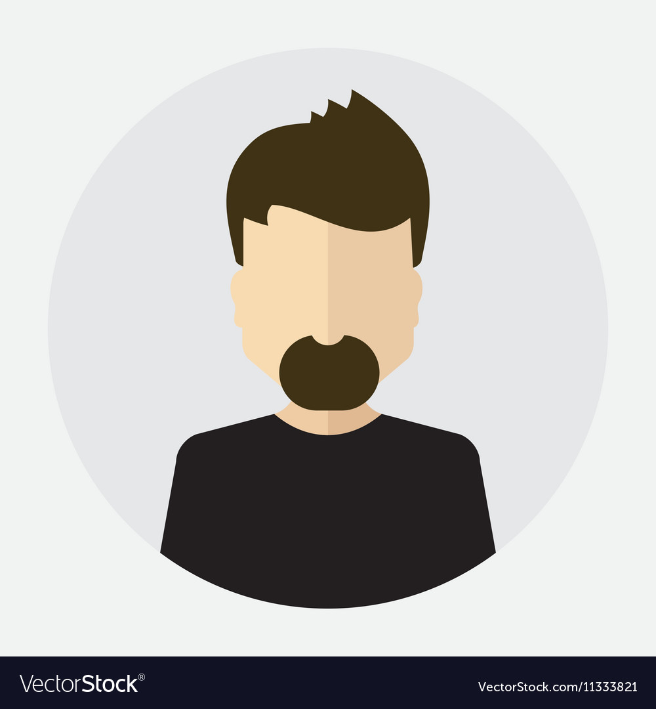

BRANCO Sullyvan
Motivé
Sérieux
Rigoureux
Compétences
HTML
CSS3
JavaScript
PHP
Language C
Suite Adobe
Pack Office

Langues
Anglais
Espagnol
Contact
Tel: 06 01 16 58 11
Mail: Sullyvan.branco1@gmail.com
Adresse: 5 rue François Mitterrand
08170 Fépin
Permis B
Date de naissance: 22/09/98
Formations
-Licence Profesionnelle metiers numérique conception rédaction et réalisation intégration webdesign
En cours de formation: 2020-2021
-BTS Systèmes Numérique option B
Obtention en 2020
Au Lycée François Bazin Charleville-Mézieres
-Bac STI2D option SIN
Obtention en 2018
Mention assez-bien
Au Lycée François Bazin Charleville-Mézieres
Expériences Professionnelles
-Stage chez ID-REP Electronic
Durée 6 semaines
Réparation de carte électronique et réalisation d’un équipement de test
-Stage chez Electrolux
Durée de 1 semaine
Loisirs
-Sports
-Jeux Vidéos